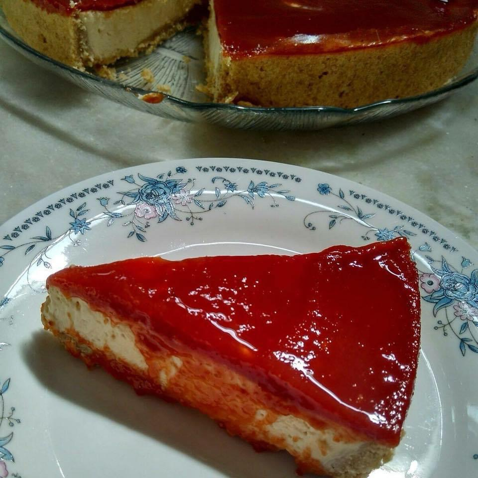

Cheesecake

Ingredientes
Massa
- 100 g de manteiga
- 75g de açúcar refinado
- 1 ovo
- 1 pitada de sal
- 220 g de farinha de trigo peneirada
- 1 colher (sobremesa) de fermento químico
Recheio
- 600g de cream cheese
- 180g de açúcar
- 1 colher (café) de essência de baunilha
- 3 ovos
Cobertura
- 420 g de poupa de goiaba ou outra fruta, como morango e frutas vermelhas
- 200 g de açúcar refinado
- Suco de 1/4 de limão
Modo de preparo
Massa
- Misturar a manteiga e o açúcar até obter a consistência de areia.
- Acrescentar os ovos, a farinha, o sal e o fermento.
- Forrar o fundo e a lateral de uma fôrma com fundo removível com a massa, furar toda a massa com um grafo e levar à geladeira por 30 minutos.
- Pré-assar a 160º C até dourar levemente.
Recheio
- Bater o cream cheese na batedeira e, aos poucos, adicionar o açúcar.
- Acrescentar a baunilha, o suco de limão e os ovos.
- Preencher a massa já pré-assada com o recheio e assar a 160°C por aproximadamente 10 minutos.
- Reduzir a temperatura para 100°C e assar por mais 10 minutos.
- Reservar na geladeira.
Cobertura
- Levar ao fogo brando todos os ingredientes, misturando sempre até adquirir consistência pastosa.
- Deixar esfriar e colocar por cima do cheesecake também frio.
Observação
Receita da Cambury.